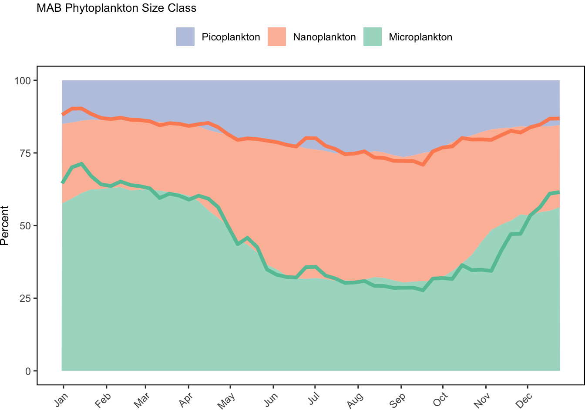

SMART Indicator Report: Phytoplankton
1 Descriptive Section
1.2 Indicator name
Phytoplankton
Includes variable(s): ANNUAL_CHLOR_A_MEDIAN, ANNUAL_CHLOR_A_RATIO_ANOMALY, ANNUAL_PPD_MEDIAN, ANNUAL_PSC_FMICRO_DIFFERENCE_ANOMALY, ANNUAL_PSC_FMICRO_MEDIAN, ANNUAL_PSC_FNANO_DIFFERENCE_ANOMALY, ANNUAL_PSC_FNANO_MEDIAN, ANNUAL_PSC_FPICO_DIFFERENCE_ANOMALY, ANNUAL_PSC_FPICO_MEDIAN, ANNUAL_PSC_MICRO_MEDIAN, ANNUAL_PSC_MICRO_RATIO_ANOMALY, ANNUAL_PSC_NANO_MEDIAN, ANNUAL_PSC_NANO_RATIO_ANOMALY, ANNUAL_PSC_PICO_MEDIAN, ANNUAL_PSC_PICO_RATIO_ANOMALY, CLIMATOLOGICAL_MONTH_CHLOR_A_MEDIAN, CLIMATOLOGICAL_MONTH_PPD_MEDIAN, CLIMATOLOGICAL_MONTH_PSC_FMICRO_MEDIAN, CLIMATOLOGICAL_MONTH_PSC_FNANO_MEDIAN, CLIMATOLOGICAL_MONTH_PSC_FPICO_MEDIAN, CLIMATOLOGICAL_MONTH_PSC_MICRO_MEDIAN, CLIMATOLOGICAL_MONTH_PSC_NANO_MEDIAN, CLIMATOLOGICAL_MONTH_PSC_PICO_MEDIAN, CLIMATOLOGICAL_WEEK_CHLOR_A_MEDIAN, CLIMATOLOGICAL_WEEK_PPD_MEDIAN, CLIMATOLOGICAL_WEEK_PSC_FMICRO_MEDIAN, CLIMATOLOGICAL_WEEK_PSC_FNANO_MEDIAN, CLIMATOLOGICAL_WEEK_PSC_FPICO_MEDIAN, CLIMATOLOGICAL_WEEK_PSC_MICRO_MEDIAN, CLIMATOLOGICAL_WEEK_PSC_NANO_MEDIAN, CLIMATOLOGICAL_WEEK_PSC_PICO_MEDIAN, LONGTERM_ANNUAL_CHLOR_A_MEDIAN, LONGTERM_ANNUAL_PPD_MEDIAN, LONGTERM_ANNUAL_PSC_FMICRO_MEDIAN, LONGTERM_ANNUAL_PSC_FNANO_MEDIAN, LONGTERM_ANNUAL_PSC_FPICO_MEDIAN, LONGTERM_ANNUAL_PSC_MICRO_MEDIAN, LONGTERM_ANNUAL_PSC_NANO_MEDIAN, LONGTERM_ANNUAL_PSC_PICO_MEDIAN, MONTHLY_CHLOR_A_MEDIAN, MONTHLY_CHLOR_A_RATIO_ANOMALY, MONTHLY_PPD_MEDIAN, MONTHLY_PPD_RATIO_ANOMALY, MONTHLY_PSC_FMICRO_DIFFERENCE_ANOMALY, MONTHLY_PSC_FMICRO_MEDIAN, MONTHLY_PSC_FNANO_DIFFERENCE_ANOMALY, MONTHLY_PSC_FNANO_MEDIAN, MONTHLY_PSC_FPICO_DIFFERENCE_ANOMALY, MONTHLY_PSC_FPICO_MEDIAN, MONTHLY_PSC_MICRO_MEDIAN, MONTHLY_PSC_MICRO_RATIO_ANOMALY, MONTHLY_PSC_NANO_MEDIAN, MONTHLY_PSC_NANO_RATIO_ANOMALY, MONTHLY_PSC_PICO_MEDIAN, MONTHLY_PSC_PICO_RATIO_ANOMALY, WEEKLY_CHLOR_A_MEDIAN, WEEKLY_CHLOR_A_RATIO_ANOMALY, WEEKLY_PPD_MEDIAN, WEEKLY_PPD_RATIO_ANOMALY, WEEKLY_PSC_FMICRO_DIFFERENCE_ANOMALY, WEEKLY_PSC_FMICRO_MEDIAN, WEEKLY_PSC_FNANO_DIFFERENCE_ANOMALY, WEEKLY_PSC_FNANO_MEDIAN, WEEKLY_PSC_FPICO_DIFFERENCE_ANOMALY, WEEKLY_PSC_FPICO_MEDIAN, WEEKLY_PSC_MICRO_MEDIAN, WEEKLY_PSC_MICRO_RATIO_ANOMALY, WEEKLY_PSC_NANO_MEDIAN, WEEKLY_PSC_NANO_RATIO_ANOMALY, WEEKLY_PSC_PICO_MEDIAN, WEEKLY_PSC_PICO_RATIO_ANOMALY
1.3 Indicator brief description
Satellite derived phytoplankton data including chlorophyll concentration, primary production, and phytoplankton size class for the Northeast Continental Shelf and ecological production units.
1.4 Indicator visualization
The seasonal cycle of phytoplankton biomass typically includes peaks during the winter-spring and fall seasons and minimums during the summer months, however exact bloom timing varies by region. Primary productivity, increases during bloom periods due to increased biomass, but peaks during the summer months when daylight and temperatures are greatest. In 2024, concentrations of chlorophyll a (a proxy for biomass) were above average during the winter-spring and fall bloom periods in all regions. There was no evidence of a repeat of the widespread Tripos muelleri bloom observed in 2023. There was, however, an atypical localized coccolithophore bloom south of Long Island, New York in late June to early July. Mid-Atlantic primary production peaked in early summer in 2024 and was above average in late fall, which is attributed to the above average late fall bloom. Georges Bank fall productivity was also above average due to the abnormally large fall phytoplankton bloom. Conversely, the Gulf of Maine spring bloom accounted for the largest above average spike in that region. The seasonal cycles of phytoplankton size distribution are typically dominated by larger-celled microplankton (> 20 um) during the winter-spring and fall bloom periods, while smaller-celled nanoplankton (0.2-20 um) dominate during the warmer summer months. The smallest phytoplankton group, picoplankton (<0.2 um), represent the smallest fraction of the phytoplankton community in the region. Phytoplankton size class distributions were near average for most of the year, except during the early fall bloom. The 2024 phytoplankton size class distribution was near the seasonal climatology in all regions except during the above average phytoplankton bloom periods. There is high interannual variability of the seasonal phytoplankton cycle. At the monthly scale, MAB chlorophyll and primary production are increasing during January, suggesting that the fall bloom period is extending into early winter. The significant decrease in MAB chlorophyll in September chlorophyll is likely related to warmer temperatures persisting into early fall and increased nutrient limitation. Fall and winter chlorophyll and primary production are increasing on Georges Bank and Gulf of Maine.

## [1] "Size plots are only available for the weekly scale."


## [1] "Size plots are only available for the weekly scale."
## [1] "Size plots are only available for the weekly scale."2 SMART Attribute Section
2.1 Indicator documentation
2.1.1 Are indicators available for others to use (data downloadable)?
Yes
2.1.1.1 Where can indicators be found?
Data: https://noaa-edab.github.io/ecodata/index.html
Description: https://noaa-edab.github.io/catalog/chl_pp.html
Technical documentation: https://noaa-edab.github.io/tech-doc/chl_pp.html
2.1.1.2 How often are they updated? Are future updates likely?
[need sequential look at datasets for update frequency. Future requires judgement]
2.1.2 Gather indicator statistics
2.1.2.1 Units
Indicator | Units |
|---|---|
ANNUAL_CHLOR_A_MEDIAN | mg m^-3 |
ANNUAL_CHLOR_A_RATIO_ANOMALY | mg m^-3 |
ANNUAL_PPD_MEDIAN | gcarbon/m^2/day |
ANNUAL_PSC_FMICRO_DIFFERENCE_ANOMALY | percent |
ANNUAL_PSC_FMICRO_MEDIAN | percent |
ANNUAL_PSC_FNANO_DIFFERENCE_ANOMALY | percent |
ANNUAL_PSC_FNANO_MEDIAN | percent |
ANNUAL_PSC_FPICO_DIFFERENCE_ANOMALY | percent |
ANNUAL_PSC_FPICO_MEDIAN | percent |
ANNUAL_PSC_MICRO_MEDIAN | mg m^-3 |
ANNUAL_PSC_MICRO_RATIO_ANOMALY | mg m^-3 |
ANNUAL_PSC_NANO_MEDIAN | mg m^-3 |
ANNUAL_PSC_NANO_RATIO_ANOMALY | mg m^-3 |
ANNUAL_PSC_PICO_MEDIAN | mg m^-3 |
ANNUAL_PSC_PICO_RATIO_ANOMALY | mg m^-3 |
CLIMATOLOGICAL_MONTH_CHLOR_A_MEDIAN | mg m^-3 |
CLIMATOLOGICAL_MONTH_PPD_MEDIAN | gcarbon/m^2/day |
CLIMATOLOGICAL_MONTH_PSC_FMICRO_MEDIAN | percent |
CLIMATOLOGICAL_MONTH_PSC_FNANO_MEDIAN | percent |
CLIMATOLOGICAL_MONTH_PSC_FPICO_MEDIAN | percent |
CLIMATOLOGICAL_MONTH_PSC_MICRO_MEDIAN | mg m^-3 |
CLIMATOLOGICAL_MONTH_PSC_NANO_MEDIAN | mg m^-3 |
CLIMATOLOGICAL_MONTH_PSC_PICO_MEDIAN | mg m^-3 |
CLIMATOLOGICAL_WEEK_CHLOR_A_MEDIAN | mg m^-3 |
CLIMATOLOGICAL_WEEK_PPD_MEDIAN | gcarbon/m^2/day |
CLIMATOLOGICAL_WEEK_PSC_FMICRO_MEDIAN | percent |
CLIMATOLOGICAL_WEEK_PSC_FNANO_MEDIAN | percent |
CLIMATOLOGICAL_WEEK_PSC_FPICO_MEDIAN | percent |
CLIMATOLOGICAL_WEEK_PSC_MICRO_MEDIAN | mg m^-3 |
CLIMATOLOGICAL_WEEK_PSC_NANO_MEDIAN | mg m^-3 |
CLIMATOLOGICAL_WEEK_PSC_PICO_MEDIAN | mg m^-3 |
LONGTERM_ANNUAL_CHLOR_A_MEDIAN | mg m^-3 |
LONGTERM_ANNUAL_PPD_MEDIAN | gcarbon/m^2/day |
LONGTERM_ANNUAL_PSC_FMICRO_MEDIAN | percent |
LONGTERM_ANNUAL_PSC_FNANO_MEDIAN | percent |
LONGTERM_ANNUAL_PSC_FPICO_MEDIAN | percent |
LONGTERM_ANNUAL_PSC_MICRO_MEDIAN | mg m^-3 |
LONGTERM_ANNUAL_PSC_NANO_MEDIAN | mg m^-3 |
LONGTERM_ANNUAL_PSC_PICO_MEDIAN | mg m^-3 |
MONTHLY_CHLOR_A_MEDIAN | mg m^-3 |
MONTHLY_CHLOR_A_RATIO_ANOMALY | mg m^-3 |
MONTHLY_PPD_MEDIAN | gcarbon/m^2/day |
MONTHLY_PPD_RATIO_ANOMALY | gcarbon/m^2/day |
MONTHLY_PSC_FMICRO_DIFFERENCE_ANOMALY | percent |
MONTHLY_PSC_FMICRO_MEDIAN | percent |
MONTHLY_PSC_FNANO_DIFFERENCE_ANOMALY | percent |
MONTHLY_PSC_FNANO_MEDIAN | percent |
MONTHLY_PSC_FPICO_DIFFERENCE_ANOMALY | percent |
MONTHLY_PSC_FPICO_MEDIAN | percent |
MONTHLY_PSC_MICRO_MEDIAN | mg m^-3 |
MONTHLY_PSC_MICRO_RATIO_ANOMALY | mg m^-3 |
MONTHLY_PSC_NANO_MEDIAN | mg m^-3 |
MONTHLY_PSC_NANO_RATIO_ANOMALY | mg m^-3 |
MONTHLY_PSC_PICO_MEDIAN | mg m^-3 |
MONTHLY_PSC_PICO_RATIO_ANOMALY | mg m^-3 |
WEEKLY_CHLOR_A_MEDIAN | mg m^-3 |
WEEKLY_CHLOR_A_RATIO_ANOMALY | mg m^-3 |
WEEKLY_PPD_MEDIAN | gcarbon/m^2/day |
WEEKLY_PPD_RATIO_ANOMALY | gcarbon/m^2/day |
WEEKLY_PSC_FMICRO_DIFFERENCE_ANOMALY | percent |
WEEKLY_PSC_FMICRO_MEDIAN | percent |
WEEKLY_PSC_FNANO_DIFFERENCE_ANOMALY | percent |
WEEKLY_PSC_FNANO_MEDIAN | percent |
WEEKLY_PSC_FPICO_DIFFERENCE_ANOMALY | percent |
WEEKLY_PSC_FPICO_MEDIAN | percent |
WEEKLY_PSC_MICRO_MEDIAN | mg m^-3 |
WEEKLY_PSC_MICRO_RATIO_ANOMALY | mg m^-3 |
WEEKLY_PSC_NANO_MEDIAN | mg m^-3 |
WEEKLY_PSC_NANO_RATIO_ANOMALY | mg m^-3 |
WEEKLY_PSC_PICO_MEDIAN | mg m^-3 |
WEEKLY_PSC_PICO_RATIO_ANOMALY | mg m^-3 |
2.1.2.2 Length of time series, start and end date, periodicity
General overview: Daily, weekly, monthly, annual, climatology (1998 to 2020)
Indicator specifics:
Indicator | EPU | StartYear | EndYear | NumYears | MissingYears |
|---|---|---|---|---|---|
ANNUAL_CHLOR_A_MEDIAN | GB | 1998 | 2024 | 27 | 0 |
ANNUAL_CHLOR_A_MEDIAN | GOM | 1998 | 2024 | 27 | 0 |
ANNUAL_CHLOR_A_MEDIAN | MAB | 1998 | 2024 | 27 | 0 |
ANNUAL_CHLOR_A_RATIO_ANOMALY | GB | 1998 | 2024 | 27 | 0 |
ANNUAL_CHLOR_A_RATIO_ANOMALY | GOM | 1998 | 2024 | 27 | 0 |
ANNUAL_CHLOR_A_RATIO_ANOMALY | MAB | 1998 | 2024 | 27 | 0 |
ANNUAL_PPD_MEDIAN | GB | 1998 | 2024 | 27 | 0 |
ANNUAL_PPD_MEDIAN | GOM | 1998 | 2024 | 27 | 0 |
ANNUAL_PPD_MEDIAN | MAB | 1998 | 2024 | 27 | 0 |
ANNUAL_PSC_FMICRO_DIFFERENCE_ANOMALY | GB | 1998 | 2024 | 27 | 0 |
ANNUAL_PSC_FMICRO_DIFFERENCE_ANOMALY | GOM | 1998 | 2024 | 27 | 0 |
ANNUAL_PSC_FMICRO_DIFFERENCE_ANOMALY | MAB | 1998 | 2024 | 27 | 0 |
ANNUAL_PSC_FMICRO_MEDIAN | GB | 1998 | 2024 | 27 | 0 |
ANNUAL_PSC_FMICRO_MEDIAN | GOM | 1998 | 2024 | 27 | 0 |
ANNUAL_PSC_FMICRO_MEDIAN | MAB | 1998 | 2024 | 27 | 0 |
ANNUAL_PSC_FNANO_DIFFERENCE_ANOMALY | GB | 1998 | 2024 | 27 | 0 |
ANNUAL_PSC_FNANO_DIFFERENCE_ANOMALY | GOM | 1998 | 2024 | 27 | 0 |
ANNUAL_PSC_FNANO_DIFFERENCE_ANOMALY | MAB | 1998 | 2024 | 27 | 0 |
ANNUAL_PSC_FNANO_MEDIAN | GB | 1998 | 2024 | 27 | 0 |
ANNUAL_PSC_FNANO_MEDIAN | GOM | 1998 | 2024 | 27 | 0 |
ANNUAL_PSC_FNANO_MEDIAN | MAB | 1998 | 2024 | 27 | 0 |
ANNUAL_PSC_FPICO_DIFFERENCE_ANOMALY | GB | 1998 | 2024 | 27 | 0 |
ANNUAL_PSC_FPICO_DIFFERENCE_ANOMALY | GOM | 1998 | 2024 | 27 | 0 |
ANNUAL_PSC_FPICO_DIFFERENCE_ANOMALY | MAB | 1998 | 2024 | 27 | 0 |
ANNUAL_PSC_FPICO_MEDIAN | GB | 1998 | 2024 | 27 | 0 |
ANNUAL_PSC_FPICO_MEDIAN | GOM | 1998 | 2024 | 27 | 0 |
ANNUAL_PSC_FPICO_MEDIAN | MAB | 1998 | 2024 | 27 | 0 |
ANNUAL_PSC_MICRO_MEDIAN | GB | 1998 | 2024 | 27 | 0 |
ANNUAL_PSC_MICRO_MEDIAN | GOM | 1998 | 2024 | 27 | 0 |
ANNUAL_PSC_MICRO_MEDIAN | MAB | 1998 | 2024 | 27 | 0 |
ANNUAL_PSC_MICRO_RATIO_ANOMALY | GB | 1998 | 2024 | 27 | 0 |
ANNUAL_PSC_MICRO_RATIO_ANOMALY | GOM | 1998 | 2024 | 27 | 0 |
ANNUAL_PSC_MICRO_RATIO_ANOMALY | MAB | 1998 | 2024 | 27 | 0 |
ANNUAL_PSC_NANO_MEDIAN | GB | 1998 | 2024 | 27 | 0 |
ANNUAL_PSC_NANO_MEDIAN | GOM | 1998 | 2024 | 27 | 0 |
ANNUAL_PSC_NANO_MEDIAN | MAB | 1998 | 2024 | 27 | 0 |
ANNUAL_PSC_NANO_RATIO_ANOMALY | GB | 1998 | 2024 | 27 | 0 |
ANNUAL_PSC_NANO_RATIO_ANOMALY | GOM | 1998 | 2024 | 27 | 0 |
ANNUAL_PSC_NANO_RATIO_ANOMALY | MAB | 1998 | 2024 | 27 | 0 |
ANNUAL_PSC_PICO_MEDIAN | GB | 1998 | 2024 | 27 | 0 |
ANNUAL_PSC_PICO_MEDIAN | GOM | 1998 | 2024 | 27 | 0 |
ANNUAL_PSC_PICO_MEDIAN | MAB | 1998 | 2024 | 27 | 0 |
ANNUAL_PSC_PICO_RATIO_ANOMALY | GB | 1998 | 2024 | 27 | 0 |
ANNUAL_PSC_PICO_RATIO_ANOMALY | GOM | 1998 | 2024 | 27 | 0 |
ANNUAL_PSC_PICO_RATIO_ANOMALY | MAB | 1998 | 2024 | 27 | 0 |
CLIMATOLOGICAL_MONTH_CHLOR_A_MEDIAN | GB | 119982020 | 1219972020 | 12 | 1099989989 |
CLIMATOLOGICAL_MONTH_CHLOR_A_MEDIAN | GOM | 119982020 | 1219972020 | 12 | 1099989989 |
CLIMATOLOGICAL_MONTH_CHLOR_A_MEDIAN | MAB | 119982020 | 1219972020 | 12 | 1099989989 |
CLIMATOLOGICAL_MONTH_PPD_MEDIAN | GB | 119982020 | 1219972020 | 12 | 1099989989 |
CLIMATOLOGICAL_MONTH_PPD_MEDIAN | GOM | 119982020 | 1219972020 | 12 | 1099989989 |
CLIMATOLOGICAL_MONTH_PPD_MEDIAN | MAB | 119982020 | 1219972020 | 12 | 1099989989 |
CLIMATOLOGICAL_MONTH_PSC_FMICRO_MEDIAN | GB | 119982020 | 1219972020 | 12 | 1099989989 |
CLIMATOLOGICAL_MONTH_PSC_FMICRO_MEDIAN | GOM | 119982020 | 1219972020 | 12 | 1099989989 |
CLIMATOLOGICAL_MONTH_PSC_FMICRO_MEDIAN | MAB | 119982020 | 1219972020 | 12 | 1099989989 |
CLIMATOLOGICAL_MONTH_PSC_FNANO_MEDIAN | GB | 119982020 | 1219972020 | 12 | 1099989989 |
CLIMATOLOGICAL_MONTH_PSC_FNANO_MEDIAN | GOM | 119982020 | 1219972020 | 12 | 1099989989 |
CLIMATOLOGICAL_MONTH_PSC_FNANO_MEDIAN | MAB | 119982020 | 1219972020 | 12 | 1099989989 |
CLIMATOLOGICAL_MONTH_PSC_FPICO_MEDIAN | GB | 119982020 | 1219972020 | 12 | 1099989989 |
CLIMATOLOGICAL_MONTH_PSC_FPICO_MEDIAN | GOM | 119982020 | 1219972020 | 12 | 1099989989 |
CLIMATOLOGICAL_MONTH_PSC_FPICO_MEDIAN | MAB | 119982020 | 1219972020 | 12 | 1099989989 |
CLIMATOLOGICAL_MONTH_PSC_MICRO_MEDIAN | GB | 119982020 | 1219972020 | 12 | 1099989989 |
CLIMATOLOGICAL_MONTH_PSC_MICRO_MEDIAN | GOM | 119982020 | 1219972020 | 12 | 1099989989 |
CLIMATOLOGICAL_MONTH_PSC_MICRO_MEDIAN | MAB | 119982020 | 1219972020 | 12 | 1099989989 |
CLIMATOLOGICAL_MONTH_PSC_NANO_MEDIAN | GB | 119982020 | 1219972020 | 12 | 1099989989 |
CLIMATOLOGICAL_MONTH_PSC_NANO_MEDIAN | GOM | 119982020 | 1219972020 | 12 | 1099989989 |
CLIMATOLOGICAL_MONTH_PSC_NANO_MEDIAN | MAB | 119982020 | 1219972020 | 12 | 1099989989 |
CLIMATOLOGICAL_MONTH_PSC_PICO_MEDIAN | GB | 119982020 | 1219972020 | 12 | 1099989989 |
CLIMATOLOGICAL_MONTH_PSC_PICO_MEDIAN | GOM | 119982020 | 1219972020 | 12 | 1099989989 |
CLIMATOLOGICAL_MONTH_PSC_PICO_MEDIAN | MAB | 119982020 | 1219972020 | 12 | 1099989989 |
CLIMATOLOGICAL_WEEK_CHLOR_A_MEDIAN | GB | 119982020 | 5219972020 | 52 | 5099989949 |
CLIMATOLOGICAL_WEEK_CHLOR_A_MEDIAN | GOM | 119982020 | 5219972020 | 52 | 5099989949 |
CLIMATOLOGICAL_WEEK_CHLOR_A_MEDIAN | MAB | 119982020 | 5219972020 | 52 | 5099989949 |
CLIMATOLOGICAL_WEEK_PPD_MEDIAN | GB | 119982020 | 5219972020 | 52 | 5099989949 |
CLIMATOLOGICAL_WEEK_PPD_MEDIAN | GOM | 119982020 | 5219972020 | 52 | 5099989949 |
CLIMATOLOGICAL_WEEK_PPD_MEDIAN | MAB | 119982020 | 5219972020 | 52 | 5099989949 |
CLIMATOLOGICAL_WEEK_PSC_FMICRO_MEDIAN | GB | 119982020 | 5219972020 | 52 | 5099989949 |
CLIMATOLOGICAL_WEEK_PSC_FMICRO_MEDIAN | GOM | 119982020 | 5219972020 | 52 | 5099989949 |
CLIMATOLOGICAL_WEEK_PSC_FMICRO_MEDIAN | MAB | 119982020 | 5219972020 | 52 | 5099989949 |
CLIMATOLOGICAL_WEEK_PSC_FNANO_MEDIAN | GB | 119982020 | 5219972020 | 52 | 5099989949 |
CLIMATOLOGICAL_WEEK_PSC_FNANO_MEDIAN | GOM | 119982020 | 5219972020 | 52 | 5099989949 |
CLIMATOLOGICAL_WEEK_PSC_FNANO_MEDIAN | MAB | 119982020 | 5219972020 | 52 | 5099989949 |
CLIMATOLOGICAL_WEEK_PSC_FPICO_MEDIAN | GB | 119982020 | 5219972020 | 52 | 5099989949 |
CLIMATOLOGICAL_WEEK_PSC_FPICO_MEDIAN | GOM | 119982020 | 5219972020 | 52 | 5099989949 |
CLIMATOLOGICAL_WEEK_PSC_FPICO_MEDIAN | MAB | 119982020 | 5219972020 | 52 | 5099989949 |
CLIMATOLOGICAL_WEEK_PSC_MICRO_MEDIAN | GB | 119982020 | 5219972020 | 52 | 5099989949 |
CLIMATOLOGICAL_WEEK_PSC_MICRO_MEDIAN | GOM | 119982020 | 5219972020 | 52 | 5099989949 |
CLIMATOLOGICAL_WEEK_PSC_MICRO_MEDIAN | MAB | 119982020 | 5219972020 | 52 | 5099989949 |
CLIMATOLOGICAL_WEEK_PSC_NANO_MEDIAN | GB | 119982020 | 5219972020 | 52 | 5099989949 |
CLIMATOLOGICAL_WEEK_PSC_NANO_MEDIAN | GOM | 119982020 | 5219972020 | 52 | 5099989949 |
CLIMATOLOGICAL_WEEK_PSC_NANO_MEDIAN | MAB | 119982020 | 5219972020 | 52 | 5099989949 |
CLIMATOLOGICAL_WEEK_PSC_PICO_MEDIAN | GB | 119982020 | 5219972020 | 52 | 5099989949 |
CLIMATOLOGICAL_WEEK_PSC_PICO_MEDIAN | GOM | 119982020 | 5219972020 | 52 | 5099989949 |
CLIMATOLOGICAL_WEEK_PSC_PICO_MEDIAN | MAB | 119982020 | 5219972020 | 52 | 5099989949 |
LONGTERM_ANNUAL_CHLOR_A_MEDIAN | GB | 19982020 | 19982020 | 1 | 0 |
LONGTERM_ANNUAL_CHLOR_A_MEDIAN | GOM | 19982020 | 19982020 | 1 | 0 |
LONGTERM_ANNUAL_CHLOR_A_MEDIAN | MAB | 19982020 | 19982020 | 1 | 0 |
LONGTERM_ANNUAL_PPD_MEDIAN | GB | 19982020 | 19982020 | 1 | 0 |
LONGTERM_ANNUAL_PPD_MEDIAN | GOM | 19982020 | 19982020 | 1 | 0 |
LONGTERM_ANNUAL_PPD_MEDIAN | MAB | 19982020 | 19982020 | 1 | 0 |
LONGTERM_ANNUAL_PSC_FMICRO_MEDIAN | GB | 19982020 | 19982020 | 1 | 0 |
LONGTERM_ANNUAL_PSC_FMICRO_MEDIAN | GOM | 19982020 | 19982020 | 1 | 0 |
LONGTERM_ANNUAL_PSC_FMICRO_MEDIAN | MAB | 19982020 | 19982020 | 1 | 0 |
LONGTERM_ANNUAL_PSC_FNANO_MEDIAN | GB | 19982020 | 19982020 | 1 | 0 |
LONGTERM_ANNUAL_PSC_FNANO_MEDIAN | GOM | 19982020 | 19982020 | 1 | 0 |
LONGTERM_ANNUAL_PSC_FNANO_MEDIAN | MAB | 19982020 | 19982020 | 1 | 0 |
LONGTERM_ANNUAL_PSC_FPICO_MEDIAN | GB | 19982020 | 19982020 | 1 | 0 |
LONGTERM_ANNUAL_PSC_FPICO_MEDIAN | GOM | 19982020 | 19982020 | 1 | 0 |
LONGTERM_ANNUAL_PSC_FPICO_MEDIAN | MAB | 19982020 | 19982020 | 1 | 0 |
LONGTERM_ANNUAL_PSC_MICRO_MEDIAN | GB | 19982020 | 19982020 | 1 | 0 |
LONGTERM_ANNUAL_PSC_MICRO_MEDIAN | GOM | 19982020 | 19982020 | 1 | 0 |
LONGTERM_ANNUAL_PSC_MICRO_MEDIAN | MAB | 19982020 | 19982020 | 1 | 0 |
LONGTERM_ANNUAL_PSC_NANO_MEDIAN | GB | 19982020 | 19982020 | 1 | 0 |
LONGTERM_ANNUAL_PSC_NANO_MEDIAN | GOM | 19982020 | 19982020 | 1 | 0 |
LONGTERM_ANNUAL_PSC_NANO_MEDIAN | MAB | 19982020 | 19982020 | 1 | 0 |
LONGTERM_ANNUAL_PSC_PICO_MEDIAN | GB | 19982020 | 19982020 | 1 | 0 |
LONGTERM_ANNUAL_PSC_PICO_MEDIAN | GOM | 19982020 | 19982020 | 1 | 0 |
LONGTERM_ANNUAL_PSC_PICO_MEDIAN | MAB | 19982020 | 19982020 | 1 | 0 |
MONTHLY_CHLOR_A_MEDIAN | GB | 199801 | 202412 | 324 | 2288 |
MONTHLY_CHLOR_A_MEDIAN | GOM | 199801 | 202412 | 324 | 2288 |
MONTHLY_CHLOR_A_MEDIAN | MAB | 199801 | 202412 | 324 | 2288 |
MONTHLY_CHLOR_A_RATIO_ANOMALY | GB | 199801 | 202412 | 324 | 2288 |
MONTHLY_CHLOR_A_RATIO_ANOMALY | GOM | 199801 | 202412 | 324 | 2288 |
MONTHLY_CHLOR_A_RATIO_ANOMALY | MAB | 199801 | 202412 | 324 | 2288 |
MONTHLY_PPD_MEDIAN | GB | 199801 | 202412 | 324 | 2288 |
MONTHLY_PPD_MEDIAN | GOM | 199801 | 202412 | 324 | 2288 |
MONTHLY_PPD_MEDIAN | MAB | 199801 | 202412 | 324 | 2288 |
MONTHLY_PPD_RATIO_ANOMALY | GB | 199801 | 202412 | 324 | 2288 |
MONTHLY_PPD_RATIO_ANOMALY | GOM | 199801 | 202412 | 324 | 2288 |
MONTHLY_PPD_RATIO_ANOMALY | MAB | 199801 | 202412 | 324 | 2288 |
MONTHLY_PSC_FMICRO_DIFFERENCE_ANOMALY | GB | 199801 | 202412 | 324 | 2288 |
MONTHLY_PSC_FMICRO_DIFFERENCE_ANOMALY | GOM | 199801 | 202412 | 324 | 2288 |
MONTHLY_PSC_FMICRO_DIFFERENCE_ANOMALY | MAB | 199801 | 202412 | 324 | 2288 |
MONTHLY_PSC_FMICRO_MEDIAN | GB | 199801 | 202412 | 324 | 2288 |
MONTHLY_PSC_FMICRO_MEDIAN | GOM | 199801 | 202412 | 324 | 2288 |
MONTHLY_PSC_FMICRO_MEDIAN | MAB | 199801 | 202412 | 324 | 2288 |
MONTHLY_PSC_FNANO_DIFFERENCE_ANOMALY | GB | 199801 | 202412 | 324 | 2288 |
MONTHLY_PSC_FNANO_DIFFERENCE_ANOMALY | GOM | 199801 | 202412 | 324 | 2288 |
MONTHLY_PSC_FNANO_DIFFERENCE_ANOMALY | MAB | 199801 | 202412 | 324 | 2288 |
MONTHLY_PSC_FNANO_MEDIAN | GB | 199801 | 202412 | 324 | 2288 |
MONTHLY_PSC_FNANO_MEDIAN | GOM | 199801 | 202412 | 324 | 2288 |
MONTHLY_PSC_FNANO_MEDIAN | MAB | 199801 | 202412 | 324 | 2288 |
MONTHLY_PSC_FPICO_DIFFERENCE_ANOMALY | GB | 199801 | 202412 | 324 | 2288 |
MONTHLY_PSC_FPICO_DIFFERENCE_ANOMALY | GOM | 199801 | 202412 | 324 | 2288 |
MONTHLY_PSC_FPICO_DIFFERENCE_ANOMALY | MAB | 199801 | 202412 | 324 | 2288 |
MONTHLY_PSC_FPICO_MEDIAN | GB | 199801 | 202412 | 324 | 2288 |
MONTHLY_PSC_FPICO_MEDIAN | GOM | 199801 | 202412 | 324 | 2288 |
MONTHLY_PSC_FPICO_MEDIAN | MAB | 199801 | 202412 | 324 | 2288 |
MONTHLY_PSC_MICRO_MEDIAN | GB | 199801 | 202412 | 324 | 2288 |
MONTHLY_PSC_MICRO_MEDIAN | GOM | 199801 | 202412 | 324 | 2288 |
MONTHLY_PSC_MICRO_MEDIAN | MAB | 199801 | 202412 | 324 | 2288 |
MONTHLY_PSC_MICRO_RATIO_ANOMALY | GB | 199801 | 202412 | 324 | 2288 |
MONTHLY_PSC_MICRO_RATIO_ANOMALY | GOM | 199801 | 202412 | 324 | 2288 |
MONTHLY_PSC_MICRO_RATIO_ANOMALY | MAB | 199801 | 202412 | 324 | 2288 |
MONTHLY_PSC_NANO_MEDIAN | GB | 199801 | 202412 | 324 | 2288 |
MONTHLY_PSC_NANO_MEDIAN | GOM | 199801 | 202412 | 324 | 2288 |
MONTHLY_PSC_NANO_MEDIAN | MAB | 199801 | 202412 | 324 | 2288 |
MONTHLY_PSC_NANO_RATIO_ANOMALY | GB | 199801 | 202412 | 324 | 2288 |
MONTHLY_PSC_NANO_RATIO_ANOMALY | GOM | 199801 | 202412 | 324 | 2288 |
MONTHLY_PSC_NANO_RATIO_ANOMALY | MAB | 199801 | 202412 | 324 | 2288 |
MONTHLY_PSC_PICO_MEDIAN | GB | 199801 | 202412 | 324 | 2288 |
MONTHLY_PSC_PICO_MEDIAN | GOM | 199801 | 202412 | 324 | 2288 |
MONTHLY_PSC_PICO_MEDIAN | MAB | 199801 | 202412 | 324 | 2288 |
MONTHLY_PSC_PICO_RATIO_ANOMALY | GB | 199801 | 202412 | 324 | 2288 |
MONTHLY_PSC_PICO_RATIO_ANOMALY | GOM | 199801 | 202412 | 324 | 2288 |
MONTHLY_PSC_PICO_RATIO_ANOMALY | MAB | 199801 | 202412 | 324 | 2288 |
WEEKLY_CHLOR_A_MEDIAN | GB | 199801 | 202452 | 1404 | 1248 |
WEEKLY_CHLOR_A_MEDIAN | GOM | 199801 | 202452 | 1404 | 1248 |
WEEKLY_CHLOR_A_MEDIAN | MAB | 199801 | 202452 | 1404 | 1248 |
WEEKLY_CHLOR_A_RATIO_ANOMALY | GB | 199801 | 202452 | 1404 | 1248 |
WEEKLY_CHLOR_A_RATIO_ANOMALY | GOM | 199801 | 202452 | 1404 | 1248 |
WEEKLY_CHLOR_A_RATIO_ANOMALY | MAB | 199801 | 202452 | 1404 | 1248 |
WEEKLY_PPD_MEDIAN | GB | 199801 | 202452 | 1404 | 1248 |
WEEKLY_PPD_MEDIAN | GOM | 199801 | 202452 | 1403 | 1249 |
WEEKLY_PPD_MEDIAN | MAB | 199801 | 202452 | 1404 | 1248 |
WEEKLY_PPD_RATIO_ANOMALY | GB | 199801 | 202452 | 1404 | 1248 |
WEEKLY_PPD_RATIO_ANOMALY | GOM | 199801 | 202452 | 1403 | 1249 |
WEEKLY_PPD_RATIO_ANOMALY | MAB | 199801 | 202452 | 1404 | 1248 |
WEEKLY_PSC_FMICRO_DIFFERENCE_ANOMALY | GB | 199801 | 202452 | 1404 | 1248 |
WEEKLY_PSC_FMICRO_DIFFERENCE_ANOMALY | GOM | 199801 | 202452 | 1404 | 1248 |
WEEKLY_PSC_FMICRO_DIFFERENCE_ANOMALY | MAB | 199801 | 202452 | 1404 | 1248 |
WEEKLY_PSC_FMICRO_MEDIAN | GB | 199801 | 202452 | 1404 | 1248 |
WEEKLY_PSC_FMICRO_MEDIAN | GOM | 199801 | 202452 | 1404 | 1248 |
WEEKLY_PSC_FMICRO_MEDIAN | MAB | 199801 | 202452 | 1404 | 1248 |
WEEKLY_PSC_FNANO_DIFFERENCE_ANOMALY | GB | 199801 | 202452 | 1404 | 1248 |
WEEKLY_PSC_FNANO_DIFFERENCE_ANOMALY | GOM | 199801 | 202452 | 1404 | 1248 |
WEEKLY_PSC_FNANO_DIFFERENCE_ANOMALY | MAB | 199801 | 202452 | 1404 | 1248 |
WEEKLY_PSC_FNANO_MEDIAN | GB | 199801 | 202452 | 1404 | 1248 |
WEEKLY_PSC_FNANO_MEDIAN | GOM | 199801 | 202452 | 1404 | 1248 |
WEEKLY_PSC_FNANO_MEDIAN | MAB | 199801 | 202452 | 1404 | 1248 |
WEEKLY_PSC_FPICO_DIFFERENCE_ANOMALY | GB | 199801 | 202452 | 1404 | 1248 |
WEEKLY_PSC_FPICO_DIFFERENCE_ANOMALY | GOM | 199801 | 202452 | 1404 | 1248 |
WEEKLY_PSC_FPICO_DIFFERENCE_ANOMALY | MAB | 199801 | 202452 | 1404 | 1248 |
WEEKLY_PSC_FPICO_MEDIAN | GB | 199801 | 202452 | 1404 | 1248 |
WEEKLY_PSC_FPICO_MEDIAN | GOM | 199801 | 202452 | 1404 | 1248 |
WEEKLY_PSC_FPICO_MEDIAN | MAB | 199801 | 202452 | 1404 | 1248 |
WEEKLY_PSC_MICRO_MEDIAN | GB | 199801 | 202452 | 1404 | 1248 |
WEEKLY_PSC_MICRO_MEDIAN | GOM | 199801 | 202452 | 1404 | 1248 |
WEEKLY_PSC_MICRO_MEDIAN | MAB | 199801 | 202452 | 1404 | 1248 |
WEEKLY_PSC_MICRO_RATIO_ANOMALY | GB | 199801 | 202452 | 1404 | 1248 |
WEEKLY_PSC_MICRO_RATIO_ANOMALY | GOM | 199801 | 202452 | 1404 | 1248 |
WEEKLY_PSC_MICRO_RATIO_ANOMALY | MAB | 199801 | 202452 | 1404 | 1248 |
WEEKLY_PSC_NANO_MEDIAN | GB | 199801 | 202452 | 1404 | 1248 |
WEEKLY_PSC_NANO_MEDIAN | GOM | 199801 | 202452 | 1404 | 1248 |
WEEKLY_PSC_NANO_MEDIAN | MAB | 199801 | 202452 | 1404 | 1248 |
WEEKLY_PSC_NANO_RATIO_ANOMALY | GB | 199801 | 202452 | 1404 | 1248 |
WEEKLY_PSC_NANO_RATIO_ANOMALY | GOM | 199801 | 202452 | 1404 | 1248 |
WEEKLY_PSC_NANO_RATIO_ANOMALY | MAB | 199801 | 202452 | 1404 | 1248 |
WEEKLY_PSC_PICO_MEDIAN | GB | 199801 | 202452 | 1404 | 1248 |
WEEKLY_PSC_PICO_MEDIAN | GOM | 199801 | 202452 | 1404 | 1248 |
WEEKLY_PSC_PICO_MEDIAN | MAB | 199801 | 202452 | 1404 | 1248 |
WEEKLY_PSC_PICO_RATIO_ANOMALY | GB | 199801 | 202452 | 1404 | 1248 |
WEEKLY_PSC_PICO_RATIO_ANOMALY | GOM | 199801 | 202452 | 1404 | 1248 |
WEEKLY_PSC_PICO_RATIO_ANOMALY | MAB | 199801 | 202452 | 1404 | 1248 |
2.1.2.3 Spatial location, scale and extent
General overview: By EPU and gridded for the entire shelf
Indicator specifics:
Indicator | EPU |
|---|---|
ANNUAL_CHLOR_A_MEDIAN | GB |
ANNUAL_CHLOR_A_MEDIAN | GOM |
ANNUAL_CHLOR_A_MEDIAN | MAB |
ANNUAL_CHLOR_A_RATIO_ANOMALY | GB |
ANNUAL_CHLOR_A_RATIO_ANOMALY | GOM |
ANNUAL_CHLOR_A_RATIO_ANOMALY | MAB |
ANNUAL_PPD_MEDIAN | GB |
ANNUAL_PPD_MEDIAN | GOM |
ANNUAL_PPD_MEDIAN | MAB |
ANNUAL_PSC_FMICRO_DIFFERENCE_ANOMALY | GB |
ANNUAL_PSC_FMICRO_DIFFERENCE_ANOMALY | GOM |
ANNUAL_PSC_FMICRO_DIFFERENCE_ANOMALY | MAB |
ANNUAL_PSC_FMICRO_MEDIAN | GB |
ANNUAL_PSC_FMICRO_MEDIAN | GOM |
ANNUAL_PSC_FMICRO_MEDIAN | MAB |
ANNUAL_PSC_FNANO_DIFFERENCE_ANOMALY | GB |
ANNUAL_PSC_FNANO_DIFFERENCE_ANOMALY | GOM |
ANNUAL_PSC_FNANO_DIFFERENCE_ANOMALY | MAB |
ANNUAL_PSC_FNANO_MEDIAN | GB |
ANNUAL_PSC_FNANO_MEDIAN | GOM |
ANNUAL_PSC_FNANO_MEDIAN | MAB |
ANNUAL_PSC_FPICO_DIFFERENCE_ANOMALY | GB |
ANNUAL_PSC_FPICO_DIFFERENCE_ANOMALY | GOM |
ANNUAL_PSC_FPICO_DIFFERENCE_ANOMALY | MAB |
ANNUAL_PSC_FPICO_MEDIAN | GB |
ANNUAL_PSC_FPICO_MEDIAN | GOM |
ANNUAL_PSC_FPICO_MEDIAN | MAB |
ANNUAL_PSC_MICRO_MEDIAN | GB |
ANNUAL_PSC_MICRO_MEDIAN | GOM |
ANNUAL_PSC_MICRO_MEDIAN | MAB |
ANNUAL_PSC_MICRO_RATIO_ANOMALY | GB |
ANNUAL_PSC_MICRO_RATIO_ANOMALY | GOM |
ANNUAL_PSC_MICRO_RATIO_ANOMALY | MAB |
ANNUAL_PSC_NANO_MEDIAN | GB |
ANNUAL_PSC_NANO_MEDIAN | GOM |
ANNUAL_PSC_NANO_MEDIAN | MAB |
ANNUAL_PSC_NANO_RATIO_ANOMALY | GB |
ANNUAL_PSC_NANO_RATIO_ANOMALY | GOM |
ANNUAL_PSC_NANO_RATIO_ANOMALY | MAB |
ANNUAL_PSC_PICO_MEDIAN | GB |
ANNUAL_PSC_PICO_MEDIAN | GOM |
ANNUAL_PSC_PICO_MEDIAN | MAB |
ANNUAL_PSC_PICO_RATIO_ANOMALY | GB |
ANNUAL_PSC_PICO_RATIO_ANOMALY | GOM |
ANNUAL_PSC_PICO_RATIO_ANOMALY | MAB |
CLIMATOLOGICAL_MONTH_CHLOR_A_MEDIAN | GB |
CLIMATOLOGICAL_MONTH_CHLOR_A_MEDIAN | GOM |
CLIMATOLOGICAL_MONTH_CHLOR_A_MEDIAN | MAB |
CLIMATOLOGICAL_MONTH_PPD_MEDIAN | GB |
CLIMATOLOGICAL_MONTH_PPD_MEDIAN | GOM |
CLIMATOLOGICAL_MONTH_PPD_MEDIAN | MAB |
CLIMATOLOGICAL_MONTH_PSC_FMICRO_MEDIAN | GB |
CLIMATOLOGICAL_MONTH_PSC_FMICRO_MEDIAN | GOM |
CLIMATOLOGICAL_MONTH_PSC_FMICRO_MEDIAN | MAB |
CLIMATOLOGICAL_MONTH_PSC_FNANO_MEDIAN | GB |
CLIMATOLOGICAL_MONTH_PSC_FNANO_MEDIAN | GOM |
CLIMATOLOGICAL_MONTH_PSC_FNANO_MEDIAN | MAB |
CLIMATOLOGICAL_MONTH_PSC_FPICO_MEDIAN | GB |
CLIMATOLOGICAL_MONTH_PSC_FPICO_MEDIAN | GOM |
CLIMATOLOGICAL_MONTH_PSC_FPICO_MEDIAN | MAB |
CLIMATOLOGICAL_MONTH_PSC_MICRO_MEDIAN | GB |
CLIMATOLOGICAL_MONTH_PSC_MICRO_MEDIAN | GOM |
CLIMATOLOGICAL_MONTH_PSC_MICRO_MEDIAN | MAB |
CLIMATOLOGICAL_MONTH_PSC_NANO_MEDIAN | GB |
CLIMATOLOGICAL_MONTH_PSC_NANO_MEDIAN | GOM |
CLIMATOLOGICAL_MONTH_PSC_NANO_MEDIAN | MAB |
CLIMATOLOGICAL_MONTH_PSC_PICO_MEDIAN | GB |
CLIMATOLOGICAL_MONTH_PSC_PICO_MEDIAN | GOM |
CLIMATOLOGICAL_MONTH_PSC_PICO_MEDIAN | MAB |
CLIMATOLOGICAL_WEEK_CHLOR_A_MEDIAN | GB |
CLIMATOLOGICAL_WEEK_CHLOR_A_MEDIAN | GOM |
CLIMATOLOGICAL_WEEK_CHLOR_A_MEDIAN | MAB |
CLIMATOLOGICAL_WEEK_PPD_MEDIAN | GB |
CLIMATOLOGICAL_WEEK_PPD_MEDIAN | GOM |
CLIMATOLOGICAL_WEEK_PPD_MEDIAN | MAB |
CLIMATOLOGICAL_WEEK_PSC_FMICRO_MEDIAN | GB |
CLIMATOLOGICAL_WEEK_PSC_FMICRO_MEDIAN | GOM |
CLIMATOLOGICAL_WEEK_PSC_FMICRO_MEDIAN | MAB |
CLIMATOLOGICAL_WEEK_PSC_FNANO_MEDIAN | GB |
CLIMATOLOGICAL_WEEK_PSC_FNANO_MEDIAN | GOM |
CLIMATOLOGICAL_WEEK_PSC_FNANO_MEDIAN | MAB |
CLIMATOLOGICAL_WEEK_PSC_FPICO_MEDIAN | GB |
CLIMATOLOGICAL_WEEK_PSC_FPICO_MEDIAN | GOM |
CLIMATOLOGICAL_WEEK_PSC_FPICO_MEDIAN | MAB |
CLIMATOLOGICAL_WEEK_PSC_MICRO_MEDIAN | GB |
CLIMATOLOGICAL_WEEK_PSC_MICRO_MEDIAN | GOM |
CLIMATOLOGICAL_WEEK_PSC_MICRO_MEDIAN | MAB |
CLIMATOLOGICAL_WEEK_PSC_NANO_MEDIAN | GB |
CLIMATOLOGICAL_WEEK_PSC_NANO_MEDIAN | GOM |
CLIMATOLOGICAL_WEEK_PSC_NANO_MEDIAN | MAB |
CLIMATOLOGICAL_WEEK_PSC_PICO_MEDIAN | GB |
CLIMATOLOGICAL_WEEK_PSC_PICO_MEDIAN | GOM |
CLIMATOLOGICAL_WEEK_PSC_PICO_MEDIAN | MAB |
LONGTERM_ANNUAL_CHLOR_A_MEDIAN | GB |
LONGTERM_ANNUAL_CHLOR_A_MEDIAN | GOM |
LONGTERM_ANNUAL_CHLOR_A_MEDIAN | MAB |
LONGTERM_ANNUAL_PPD_MEDIAN | GB |
LONGTERM_ANNUAL_PPD_MEDIAN | GOM |
LONGTERM_ANNUAL_PPD_MEDIAN | MAB |
LONGTERM_ANNUAL_PSC_FMICRO_MEDIAN | GB |
LONGTERM_ANNUAL_PSC_FMICRO_MEDIAN | GOM |
LONGTERM_ANNUAL_PSC_FMICRO_MEDIAN | MAB |
LONGTERM_ANNUAL_PSC_FNANO_MEDIAN | GB |
LONGTERM_ANNUAL_PSC_FNANO_MEDIAN | GOM |
LONGTERM_ANNUAL_PSC_FNANO_MEDIAN | MAB |
LONGTERM_ANNUAL_PSC_FPICO_MEDIAN | GB |
LONGTERM_ANNUAL_PSC_FPICO_MEDIAN | GOM |
LONGTERM_ANNUAL_PSC_FPICO_MEDIAN | MAB |
LONGTERM_ANNUAL_PSC_MICRO_MEDIAN | GB |
LONGTERM_ANNUAL_PSC_MICRO_MEDIAN | GOM |
LONGTERM_ANNUAL_PSC_MICRO_MEDIAN | MAB |
LONGTERM_ANNUAL_PSC_NANO_MEDIAN | GB |
LONGTERM_ANNUAL_PSC_NANO_MEDIAN | GOM |
LONGTERM_ANNUAL_PSC_NANO_MEDIAN | MAB |
LONGTERM_ANNUAL_PSC_PICO_MEDIAN | GB |
LONGTERM_ANNUAL_PSC_PICO_MEDIAN | GOM |
LONGTERM_ANNUAL_PSC_PICO_MEDIAN | MAB |
MONTHLY_CHLOR_A_MEDIAN | GB |
MONTHLY_CHLOR_A_MEDIAN | GOM |
MONTHLY_CHLOR_A_MEDIAN | MAB |
MONTHLY_CHLOR_A_RATIO_ANOMALY | GB |
MONTHLY_CHLOR_A_RATIO_ANOMALY | GOM |
MONTHLY_CHLOR_A_RATIO_ANOMALY | MAB |
MONTHLY_PPD_MEDIAN | GB |
MONTHLY_PPD_MEDIAN | GOM |
MONTHLY_PPD_MEDIAN | MAB |
MONTHLY_PPD_RATIO_ANOMALY | GB |
MONTHLY_PPD_RATIO_ANOMALY | GOM |
MONTHLY_PPD_RATIO_ANOMALY | MAB |
MONTHLY_PSC_FMICRO_DIFFERENCE_ANOMALY | GB |
MONTHLY_PSC_FMICRO_DIFFERENCE_ANOMALY | GOM |
MONTHLY_PSC_FMICRO_DIFFERENCE_ANOMALY | MAB |
MONTHLY_PSC_FMICRO_MEDIAN | GB |
MONTHLY_PSC_FMICRO_MEDIAN | GOM |
MONTHLY_PSC_FMICRO_MEDIAN | MAB |
MONTHLY_PSC_FNANO_DIFFERENCE_ANOMALY | GB |
MONTHLY_PSC_FNANO_DIFFERENCE_ANOMALY | GOM |
MONTHLY_PSC_FNANO_DIFFERENCE_ANOMALY | MAB |
MONTHLY_PSC_FNANO_MEDIAN | GB |
MONTHLY_PSC_FNANO_MEDIAN | GOM |
MONTHLY_PSC_FNANO_MEDIAN | MAB |
MONTHLY_PSC_FPICO_DIFFERENCE_ANOMALY | GB |
MONTHLY_PSC_FPICO_DIFFERENCE_ANOMALY | GOM |
MONTHLY_PSC_FPICO_DIFFERENCE_ANOMALY | MAB |
MONTHLY_PSC_FPICO_MEDIAN | GB |
MONTHLY_PSC_FPICO_MEDIAN | GOM |
MONTHLY_PSC_FPICO_MEDIAN | MAB |
MONTHLY_PSC_MICRO_MEDIAN | GB |
MONTHLY_PSC_MICRO_MEDIAN | GOM |
MONTHLY_PSC_MICRO_MEDIAN | MAB |
MONTHLY_PSC_MICRO_RATIO_ANOMALY | GB |
MONTHLY_PSC_MICRO_RATIO_ANOMALY | GOM |
MONTHLY_PSC_MICRO_RATIO_ANOMALY | MAB |
MONTHLY_PSC_NANO_MEDIAN | GB |
MONTHLY_PSC_NANO_MEDIAN | GOM |
MONTHLY_PSC_NANO_MEDIAN | MAB |
MONTHLY_PSC_NANO_RATIO_ANOMALY | GB |
MONTHLY_PSC_NANO_RATIO_ANOMALY | GOM |
MONTHLY_PSC_NANO_RATIO_ANOMALY | MAB |
MONTHLY_PSC_PICO_MEDIAN | GB |
MONTHLY_PSC_PICO_MEDIAN | GOM |
MONTHLY_PSC_PICO_MEDIAN | MAB |
MONTHLY_PSC_PICO_RATIO_ANOMALY | GB |
MONTHLY_PSC_PICO_RATIO_ANOMALY | GOM |
MONTHLY_PSC_PICO_RATIO_ANOMALY | MAB |
WEEKLY_CHLOR_A_MEDIAN | GB |
WEEKLY_CHLOR_A_MEDIAN | GOM |
WEEKLY_CHLOR_A_MEDIAN | MAB |
WEEKLY_CHLOR_A_RATIO_ANOMALY | GB |
WEEKLY_CHLOR_A_RATIO_ANOMALY | GOM |
WEEKLY_CHLOR_A_RATIO_ANOMALY | MAB |
WEEKLY_PPD_MEDIAN | GB |
WEEKLY_PPD_MEDIAN | GOM |
WEEKLY_PPD_MEDIAN | MAB |
WEEKLY_PPD_RATIO_ANOMALY | GB |
WEEKLY_PPD_RATIO_ANOMALY | GOM |
WEEKLY_PPD_RATIO_ANOMALY | MAB |
WEEKLY_PSC_FMICRO_DIFFERENCE_ANOMALY | GB |
WEEKLY_PSC_FMICRO_DIFFERENCE_ANOMALY | GOM |
WEEKLY_PSC_FMICRO_DIFFERENCE_ANOMALY | MAB |
WEEKLY_PSC_FMICRO_MEDIAN | GB |
WEEKLY_PSC_FMICRO_MEDIAN | GOM |
WEEKLY_PSC_FMICRO_MEDIAN | MAB |
WEEKLY_PSC_FNANO_DIFFERENCE_ANOMALY | GB |
WEEKLY_PSC_FNANO_DIFFERENCE_ANOMALY | GOM |
WEEKLY_PSC_FNANO_DIFFERENCE_ANOMALY | MAB |
WEEKLY_PSC_FNANO_MEDIAN | GB |
WEEKLY_PSC_FNANO_MEDIAN | GOM |
WEEKLY_PSC_FNANO_MEDIAN | MAB |
WEEKLY_PSC_FPICO_DIFFERENCE_ANOMALY | GB |
WEEKLY_PSC_FPICO_DIFFERENCE_ANOMALY | GOM |
WEEKLY_PSC_FPICO_DIFFERENCE_ANOMALY | MAB |
WEEKLY_PSC_FPICO_MEDIAN | GB |
WEEKLY_PSC_FPICO_MEDIAN | GOM |
WEEKLY_PSC_FPICO_MEDIAN | MAB |
WEEKLY_PSC_MICRO_MEDIAN | GB |
WEEKLY_PSC_MICRO_MEDIAN | GOM |
WEEKLY_PSC_MICRO_MEDIAN | MAB |
WEEKLY_PSC_MICRO_RATIO_ANOMALY | GB |
WEEKLY_PSC_MICRO_RATIO_ANOMALY | GOM |
WEEKLY_PSC_MICRO_RATIO_ANOMALY | MAB |
WEEKLY_PSC_NANO_MEDIAN | GB |
WEEKLY_PSC_NANO_MEDIAN | GOM |
WEEKLY_PSC_NANO_MEDIAN | MAB |
WEEKLY_PSC_NANO_RATIO_ANOMALY | GB |
WEEKLY_PSC_NANO_RATIO_ANOMALY | GOM |
WEEKLY_PSC_NANO_RATIO_ANOMALY | MAB |
WEEKLY_PSC_PICO_MEDIAN | GB |
WEEKLY_PSC_PICO_MEDIAN | GOM |
WEEKLY_PSC_PICO_MEDIAN | MAB |
WEEKLY_PSC_PICO_RATIO_ANOMALY | GB |
WEEKLY_PSC_PICO_RATIO_ANOMALY | GOM |
WEEKLY_PSC_PICO_RATIO_ANOMALY | MAB |
2.1.3 Are methods clearly documented to obtain source data and calculate indicators?
Yes
2.1.3.1 Can the indicator be calculated from current documentation?
Gridded statistics, including the arithmetic mean, geometric mean, median, standard deviation, and coefficient of variation are calculated at daily (3 and 8-day running means), weekly, monthly, and annual time steps, and for several climatological periods. Annual statistics used the monthly means as inputs to avoid a summer time bias when more data are available due to reduced cloud cover. The daily, weekly, monthly and annual climatological statistics include the entire time series for each specified period. For example, the climatological January uses the monthly mean from each January in the time series and the climatological annual uses the annual mean from each year. Prior to 2024, the climatological date range was from 1998 to the current year. Starting in 2024, the climatological period was fixed to 1998 to 2020 in order to be consistent with the climatological date range of other products. Gridded weekly, monthly and annual anomalies are calculated for each product by taking the difference between the mean of the input time period (i.e. week, month, year) and the climatological mean for the same period. Because bio-optical data are typically log-normally distributed Campbell (1995), the CHL and PP data were first log-transformed prior to taking the difference and then untransformed, resulting in a unitless anomaly ratio. Total primary production is the annual summed primary production by ecological production unit (EPU). Gridded monthly mean data were used as inputs to the annual calculation and the monthly mean of all valid pixels within the EPU was used to fill in any missing pixels. All data converted from (mgC m-2 day-1) to (mgC pixel-1 day-1) by multiplying by the pixel area. The data within the EPU were then summed and multiplied by the number of days in the month to convert the data to (mgC EPU-1 month-1). The monthly data for each year were then summed and converted from grams carbon to metric tons carbon to return total annual primary production for each EPU (mtC EPU-1 year-1). The ecological production unit (EPU) shapefile that excludes the estuaries was used to spatially extract all data located within an ecoregion from the statistic and anomaly images. The median values were used for the CHL and PP data.
2.1.4 Are indicator underlying source data linked or easy to find?
Source data used in these analyses are publicly available.
2.1.4.1 Where are source data stored?
Daily Level 3 mapped (4km resolution, sinusoidally projected) satellite ocean color data are acquired from the European Space Agency’s Ocean Colour Climate Change Initiative (OC-CCI; version 6.0) and GlobColour Project. The OC-CCI data is the primary ocean color data source, however the data latency is approximately 3-4 months. GlobColour ocean color data are used to supplement the OC-CCI data to complete the time series for the current year. Sea Surface Temperature (SST) data include the 4 km nighttime NOAA Advanced Very High Resolution Radiometer (AVHRR) Pathfinder (Casey et al. (2010); Saha et al. (2018)) and the Group for High Resolution Sea Surface Temperature (GHRSST) Multiscale Ultrahigh Resolution (MUR, version 4.1) Level 4 (Chin, Vazquez-Cuervo, and Armstrong (2017); Project (2015)) data. AVHRR Pathfinder data are used as the SST source until 2002 and MUR SST in subsequent years.
2.1.4.2 How/by whom are source data updated? Are future updates likely?
Kimberly Hyde, kimberly.hyde@noaa.gov
[likelihood of source data updates requires judgement, enter by hand]
2.2 Indicator analysis/testing or history of use
2.2.1 What decision or advice processes are the indicators currently used in?
2.2 Key Results and Visualizations 2.1 Introduction to Indicator
2.2.2 What implications of the indicators are currently listed?
Phytoplankton abundance, productivity, diversity, cell size, phenology, and carbon fluxes are regulated by the local physical and chemical environment and grazing. Interannual and climatological changes in temperature, freshwater inputs (due to ice sheet melting and/or enhanced river discharge), wind direction, and wind speed can alter the circulation patterns, upwelling conditions, and nutrient fluxes, directly affecting the timing, location, species composition of phytoplankton blooms in the NES. As the NES responds to warming, changing phenologies, changing chemistry, and changes in circulation patterns, we must understand how varying biophysical interactions control phytoplankton and subsequently affect fisheries, their habitats and the people, businesses and communities that depend on them.
2.2.3 Do target, limit, or threshold values already exist for the indicator?
Target, limit, or threshold terms detected
2.2.4 Have the indicators been tested to ensure they respond proportionally to a change in the underlying process?
No
3 SMART rating
Category | Indicator | Element | Attribute | Rating | ElementRating | OverallRating |
|---|---|---|---|---|---|---|
Food-Web-Base | Phytoplankton | Specific | Described | 1 | 0.6666667 | 0.7333333 |
Food-Web-Base | Phytoplankton | Specific | Units | 1 | 0.6666667 | 0.7333333 |
Food-Web-Base | Phytoplankton | Specific | Spatial | 1 | 0.6666667 | 0.7333333 |
Food-Web-Base | Phytoplankton | Specific | Uncertainty | 0 | 0.6666667 | 0.7333333 |
Food-Web-Base | Phytoplankton | Specific | Methods | 1 | 0.6666667 | 0.7333333 |
Food-Web-Base | Phytoplankton | Specific | Code | 0 | 0.6666667 | 0.7333333 |
Food-Web-Base | Phytoplankton | Measurable | Available | 1 | 1.0000000 | 0.7333333 |
Food-Web-Base | Phytoplankton | Measurable | Online | 1 | 1.0000000 | 0.7333333 |
Food-Web-Base | Phytoplankton | Measurable | Contact | 1 | 1.0000000 | 0.7333333 |
Food-Web-Base | Phytoplankton | Measurable | SourceDat | 1 | 1.0000000 | 0.7333333 |
Food-Web-Base | Phytoplankton | Measurable | SourceAvail | 1 | 1.0000000 | 0.7333333 |
Food-Web-Base | Phytoplankton | Measurable | SourceContact | 1 | 1.0000000 | 0.7333333 |
Food-Web-Base | Phytoplankton | Achievable | Tested | 0 | 0.0000000 | 0.7333333 |
Food-Web-Base | Phytoplankton | Achievable | Sensitivity | 0 | 0.0000000 | 0.7333333 |
Food-Web-Base | Phytoplankton | Achievable | TimeLag | 0 | 0.0000000 | 0.7333333 |
Food-Web-Base | Phytoplankton | Relevant | Advice | 1 | 1.0000000 | 0.7333333 |
Food-Web-Base | Phytoplankton | Relevant | Implications | 1 | 1.0000000 | 0.7333333 |
Food-Web-Base | Phytoplankton | Relevant | TargThresh | 1 | 1.0000000 | 0.7333333 |
Food-Web-Base | Phytoplankton | Timebound | Frequency | 1 | 1.0000000 | 0.7333333 |
Food-Web-Base | Phytoplankton | Timebound | Updated | 1 | 1.0000000 | 0.7333333 |
3.1 Comments
[Fill below by hand once above data complete]
3.1.1 Additional potential links to management in addition to uses listed above
3.1.2 What additional work would be needed for the Council to use the indicator?
3.1.3 What issues are caused if there is a gap or delay in data underlying the indicator